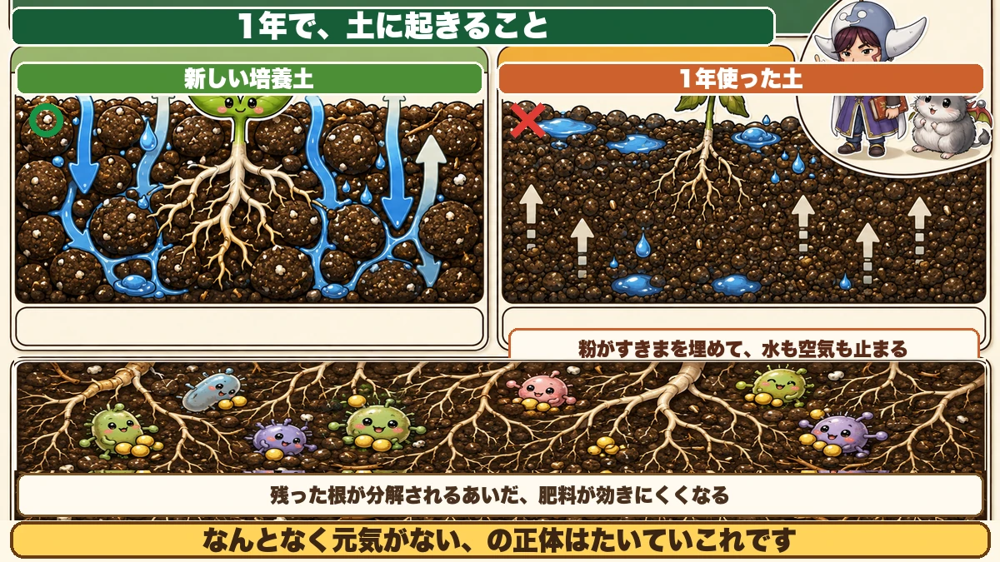
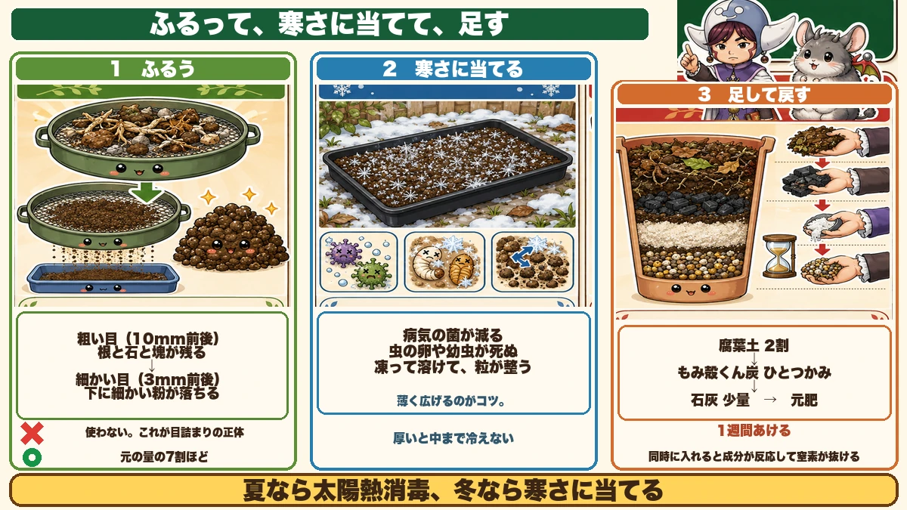
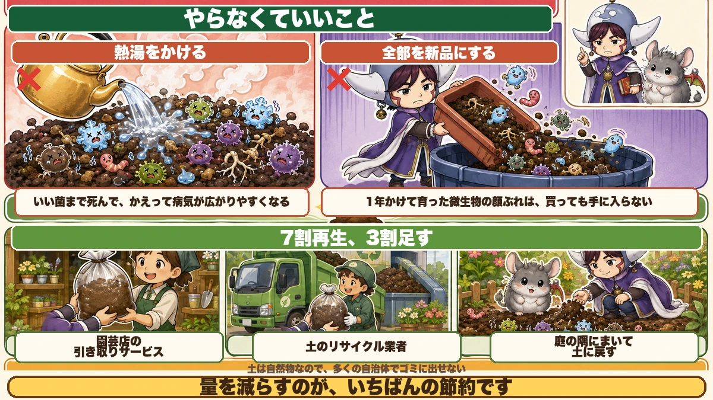

古い土は、捨てなくていいです🪴 冬にふるうだけで戻ります

🪴「使い終わった培養土、捨てるしかないですよね」
🪴「そもそも、土って燃えるゴミに出せないですし」
🪴「同じ土で続けたら、だんだん育ちが悪くなりました」
どうも、8150（えいこう）です🌱 家庭菜園歴8年、理科の教員免許を持っていて、有機・無農薬で野菜を育てています。
今日は、プランターの土の話です。
畑を持っていない方にとって、★土を買い直すのは地味にこたえる出費です。しかも捨てるのが大変で、多くの自治体では回収してくれません。
先に、この記事でいちばん言いたいことを言っておきますね。
★古い土は、捨てなくていいです。冬にふるうだけで戻ります。
なぜ、育ちが悪くなるのか

起きていることは3つ
- ★根が残っている
- ★土の粒がこわれて、細かい粉になっている
- ★肥料の成分が偏っている
このうち★いちばん影響が大きいのが2つ目です。
粒がこわれると、水も空気も止まる
新しい培養土は、★大小の粒が混じっています。粒と粒のあいだにすきまがあって、そこを水と空気が通ります。
1年使うと、★水やりのたびに粒がこわれて、細かい粉になります。この粉がすきまを埋めます。
こうなると★水はけが悪くなり、根が酸素を吸えなくなります。「なんとなく元気がない」の正体は、たいていこれです。
根は、意外と残っています
抜いたつもりでも、★細い根は大量に残っています。
残った根は分解されますが、★分解のあいだ微生物が窒素を使うので、その期間は肥料が効きにくくなります。
★だから、ふるって取り除きます。
やることは3つだけです

① ふるう
★園芸用のふるいを1つ買ってください。目が数種類ついているものが便利です。
- ★粗い目（10mm前後）で、根と石とゴロゴロした塊を取り除く
- ★細かい目（3mm前後）で、粉になった微塵を落とす
大事なのは★2回目です。★下に落ちた細かい粉は、使いません。これが目詰まりの原因そのものだからです。
★残った、真ん中のサイズの土を使います。だいたい元の量の7割くらいになります。
② 寒さに当てる
ふるった土を、★黒いトレーや古いプランターに薄く広げて、冬のあいだ外に置いておきます。
これが★冬にやる意味です。
- ★寒さで、病気の菌がかなり減る
- ★土の中で越冬しようとしていた虫の卵や幼虫が死ぬ
- ★凍って溶けるのを繰り返すと、土の粒が自然に整う
★夏なら太陽熱消毒、冬なら寒さに当てる。どちらも薬を使わずに土をきれいにする方法です。
薄く広げるのがコツです。★厚いと、中まで冷えません。
③ 足して戻す
春に使う前に、減ったぶんと機能を足します。
- ★腐葉土 … 全体の2割ほど。すきまを作る役目
- ★もみ殻くん炭 … ひとつかみから。水はけと通気
- ★苦土石灰または有機石灰 … 少量。酸性に傾いているので戻す
- ★元肥（ぼかし肥料や有機配合肥料） … 規定量
★順番は、腐葉土とくん炭を混ぜてから、石灰、最後に肥料です。
石灰と肥料を同時に入れると、★成分が反応して窒素が抜けることがあります。★石灰を入れたら1週間おいてから肥料、が安心です。
やらなくていいこと
熱湯をかける
よく紹介されていますが、★私はやりません。
理由は★悪い菌だけでなく、いい菌も全部死ぬからです。まっさらになった土は、かえって病気が広がりやすくなります。
★冬の寒さに当てるくらいが、ちょうどいい加減です。
全部を新品にする
★全部入れ替える必要もありません。
古い土には、★1年かけて育った微生物の顔ぶれが残っています。これは買っても手に入らないものです。
★7割再生、3割足す。この配分がいちばん扱いやすいと思っています。
それでも捨てたいときは

ゴミには出せません
土は★自然物なので、多くの自治体で回収対象外です。
現実的な方法は3つです。
- ★園芸店の引き取りサービスを使う（買った店で聞いてみてください）
- ★土のリサイクル業者に有料で引き取ってもらう
- ★庭がある方は、庭の隅にまいて土に戻す
★量を減らすのがいちばんの節約です。再生すれば、そもそも捨てる必要が減ります。
学ぶ：土の「団粒」というしくみ🔬
理科の時間です。
いい土のことを★団粒構造の土、と言います。
団粒というのは、★細かい土の粒が、いくつも集まって小さな団子になっている状態のことです。
団子の中には小さなすきまがあって、★ここに水がたまります。団子と団子のあいだには大きなすきまがあって、★ここを空気が通ります。
★水を持ちながら、水はけがいい。矛盾しているようで、団粒だとこれが両立します。
では、誰が団子にしているのか。★微生物と、根です。
微生物は、体から粘り気のある物質を出します。★これが接着剤になって、土の粒をくっつけます。根も同じように、まわりの土をまとめます。
★だから、腐葉土を入れて微生物を増やすと、土が団粒に近づきます。土をふかふかにするというのは、微生物に働いてもらうことなんです。
お子さんと一緒なら、★古い土と再生した土を、それぞれコップに入れて水を注いでみてください。★水が抜ける速さがはっきり違います。
まとめ
ここまで読んでくださって、ありがとうございました。
土は消耗品ではありません。手を入れれば、何年でも使えます。
- ★古い土が悪くなる最大の原因は、粒がこわれて目が詰まること
- ★ふるいは2段階。粗い目で根と石、細かい目で微塵を落とす
- ★落ちた細かい粉は使わない。それが目詰まりの正体
- ★ふるったら薄く広げて、冬の寒さに当てる。菌と虫の卵が減る
- ★春に腐葉土2割、くん炭ひとつかみ、石灰少量、最後に元肥
- ★石灰と肥料は同時に入れない。1週間あける
- ★熱湯消毒はしない。いい菌まで死んで、かえって不安定になる
- ★全部替えなくていい。7割再生、3割足すでうまくいく
- ★土はゴミに出せない。再生が結局いちばん早い
全部やろうとしなくて大丈夫です。まずは★終わったプランターを1つ、ふるってみてください。落ちてくる粉の量に驚くと思います🪴
次回は、この1年を振り返る話。★書いておくと来年が変わる、たった3行の記録をお話しします📔
腐葉土
古い土に足すものの中で、いちばん確実に効きます。土がふかふかに戻るのは、この有機物のおかげです。


苦土石灰
水やりのたびに土は酸性へ寄っていきます。再生のときに一度だけ戻してやると、次の野菜の育ちが変わります。
![[商品価格に関しましては、リンクが作成された時点と現時点で情報が変更されている場合がございます。]](https://hbb.afl.rakuten.co.jp/hgb/55e75fe5.20db4cd1.55e75fe7.d1ec32cc/?me_id=1194164&item_id=10000709&pc=https%3A%2F%2Fthumbnail.image.rakuten.co.jp%2F%400_mall%2Fgardening%2Fcabinet%2Fikou_20091001_001%2Fimg1043676078.jpg%3F_ex%3D240x240&s=240x240&t=picttext "[商品価格に関しましては、リンクが作成された時点と現時点で情報が変更されている場合がございます。]")
米ぬか
微生物のエサになります。入れすぎると虫がわくので、うすく広くが基本です。
![[商品価格に関しましては、リンクが作成された時点と現時点で情報が変更されている場合がございます。]](https://hbb.afl.rakuten.co.jp/hgb/56d21cb1.eebb183f.56d21cb2.51de80a8/?me_id=1247635&item_id=10000021&pc=https%3A%2F%2Fthumbnail.image.rakuten.co.jp%2F%400_mall%2Feco-hiryo%2Fcabinet%2Fitem6%2Fset-1-a1.jpg%3F_ex%3D240x240&s=240x240&t=picttext "[商品価格に関しましては、リンクが作成された時点と現時点で情報が変更されている場合がございます。]")
プランター
土を入れ替えるついでに、割れかけたものは替えどきです。深さのあるものだと根が張れます。